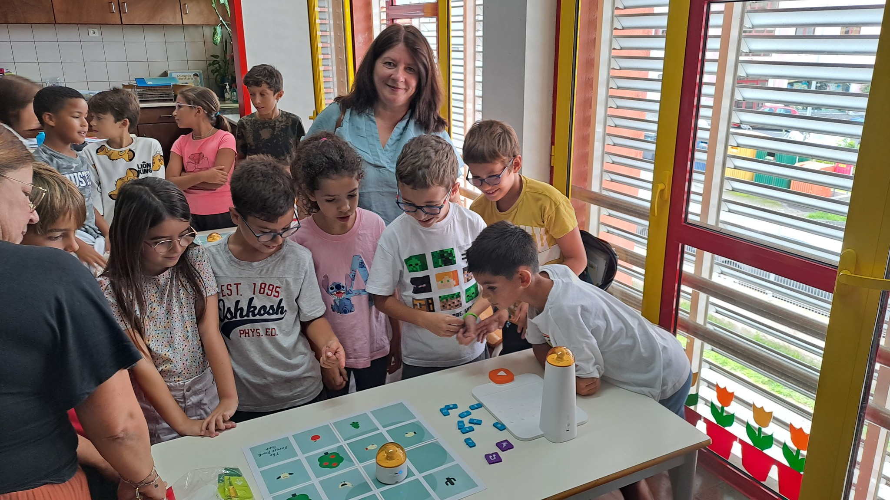
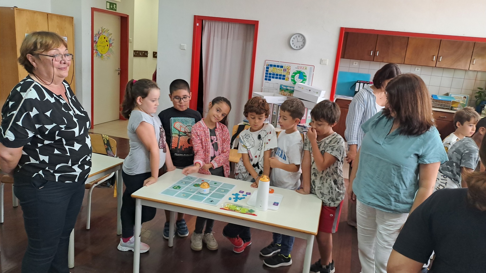
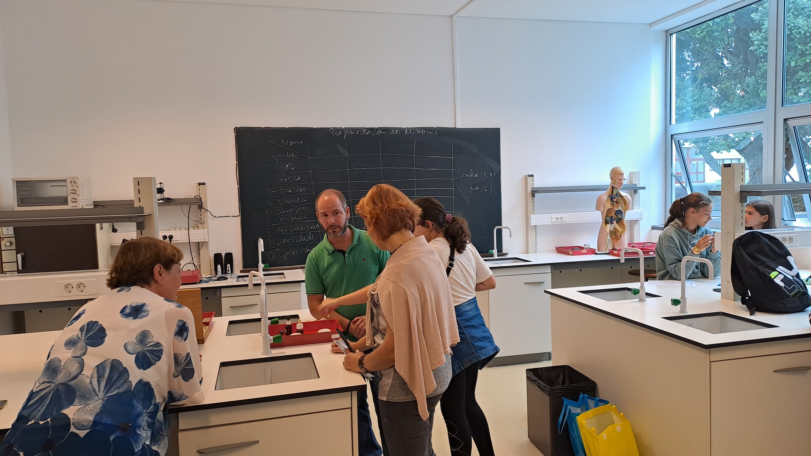

Teachers of PPMG Acad. Ivan Tsenov "- Vratsa upgraded their skills in the field of STEAM pedagogy in Portugal
In implementation of Project No. 2024-1-BG01-KA121-SCH-000202833 under Erasmus Accreditation for School Education, senior high school teachers took part in the observation of STEAM lessons and robotics club activities. The observation of the lessons and sharing of experience in the field of natural sciences and robotics was held at the school "Escola Basica Integrada de Angra do Heroismo", city. Angra du Jeroismo, Portugal. During their visit, the representatives of our school Mrs. Pepa Pavlova, Mrs. Kalina Nikolova and Mrs. Annie Pavlova were guests in Information and Communication Technology and Computer Thinking classes. Highlights of these classes were tasks related to an introduction to robotics and programming, and learning about the logical thinking behind programming, namely how computers "think" by creating codes, functions, and patterns.
The Bulgarian teachers were also acquainted with the activities of the robotics club in the Portuguese school. The exhibition of robots made by students, equipped with Microbit plates with motion sensors was interesting. Making robots out of recycled materials demonstrates an example of not only learning digital skills by students but also enhancing their green skills. Other club activities included building a smart house with Arduino, as well as working on programming kits with Python and Scratch.
The mobility program also included a lesson on "Physical and Chemical Properties of Minerals" which showed teamwork in the work of Portuguese students who were tasked with describing different types of minerals in relation to their color, hardness, luster, brightness and magnetism. Interesting ideas were also borrowed from a visit to the Science Center of Angra. The "Figures of Cool" experiment to study vibrating plates and calculate the speed of sound was fascinating. Another experiment that studies the absorption of ultraviolet radiation - transmission through different filters, allows us to point children's attention to the "Ozone hole" phenomenon. It was also fun to observe the visible spectrum of light through an instrument consisting of optical windows including light and diffraction grids. The Radiation Module provided several interactive experiences proving that the capacity of thermal absorption depends on the color of the material. Participants were intrigued by an experiment using different filters to study the transmission and absorption of different types of radiation. The experiment allows to check absorption of infrared radiation to make a connection to a phenomenon that arises in the atmosphere, called the "Parnik Effect".
On the occasion of the International Space Week, October 4-10, the Bulgarian team of teachers held a lesson on "Where is the ISS? “The Portuguese students learned about the size of the International Space Station, the speed with which it travels and the time it takes to orbit our planet. We look forward to the successfully implemented mobility under the Erasmus+ Program to contribute to the development of practical skills in science and information technology and to help students navigate in the modern digital world.
View the Guidebook